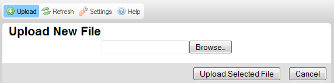
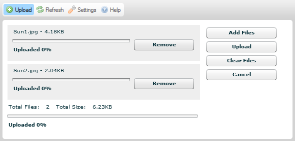
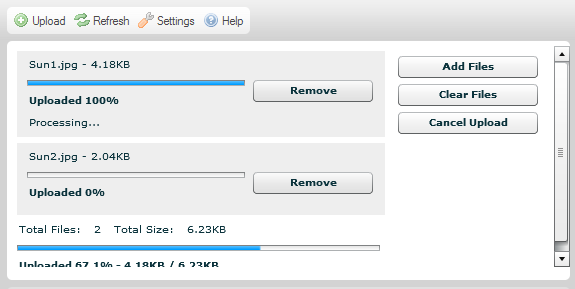

Tla?穩tko Nahr獺t (Upload), kter矇 je dostupn矇 v CKFinder na Panelu n獺stroj轡 otev?e Panel Nahr獺v獺n穩, kter羸 m轡鱉ete pou鱉穩t pro p?id獺n穩 nov羸ch soubor轡 do sou?asn矇 slo鱉ky.
Obr獺zek n穩鱉e p?edstavuje standardn穩 Panel nahr獺v獺n穩 v pr轡zkumn穩ku soubor轡, kter羸 je rozbalen p?i kliknut穩 na tla?穩tko panelu n獺stroj轡.
Abyste zav?eli (sbalili) Panel nahr獺v獺n穩, stiskn?te tla?穩tko Zru禳it (Cancel) (pokud jste je禳t? nespustili proces nahr獺v獺n穩) nebo tla?穩tko Zav?穩t (Close). M轡鱉ete tak矇 kliknout znovu na tla?穩tko Nahr獺t (Upload).
Pozn獺mka: Nahr獺v獺n穩 je technick羸 term穩n, kter羸 znamen獺 ?innost pos穩l獺n穩 soubor轡 z Va禳eho m穩stn穩ho po?穩ta?e do centr獺ln穩ho (tak矇 zn獺m jako server).
Panel nahr獺v獺n穩 CKFinder existuje ve dvou verz穩ch, v z獺vislosti na Va禳em prost?ed穩. Standardn? je verze pro v穩ce nahr獺v獺n穩 (kter獺 V獺m umo鱉n穩 nahr獺t v穩ce soubor轡 na server najednou) pou鱉ita pro v禳echny prost?ed穩, kter獺 podporuj穩 Adobe Flash. Pokud ale V獺禳 m穩stn穩 syst矇m Flash nepodporuje, budete st獺le m穩t mo鱉nost nahr獺t jednotliv矇 soubory v odd?len羸ch operac穩ch d穩ky z獺lo鱉n穩 verzi.
Obr獺zek v羸禳e p?edstavuje v羸choz穩 Panel nahr獺v獺n穩, kter羸 m獺 umo鱉n?no nahr獺vat v穩ce soubor轡 najednou. Pro v禳echny syst矇my, kter矇 Flash nepodporuj穩 (v?etn? n?kter羸ch mobiln穩ch prohl穩鱉e?轡) bude pou鱉it n獺sleduj穩c穩 form獺t Panelu nahr獺v獺n穩.

Standardn? V獺m CKFinder umo鱉n穩 nahr獺t n?kolik soubor轡 najednou. Abyste odeslali soubory na server, postupujte podle krok轡 popsan羸ch n穩鱉e.
Krok 1: Klikn?te na tla?穩tko Nahr獺t (Upload) na panelu n獺stroj轡 pro otev?en穩 Panelu nahr獺v獺n穩.
Krok 2: Kdy鱉 je Panel nahr獺v獺n穩 rozbalen, klikn?te na tla?穩tko P?idat soubory (Add Files). Otev?e se dialogov矇 okno v羸b?ru soubor轡 Va禳eho opera?n穩ho syst矇mu, kter矇 V獺m umo鱉n穩 vybrat m穩stn穩 soubor k nahr獺n穩 na server.
Pozn獺mka: M轡鱉ete vybrat tolik soubor轡, kolik chcete t穩m, 鱉e je v禳echny najednou vyberte v dialogov矇m okn?.
Krok 3: M穩stn穩 soubor(y) bude nyn穩 p?id獺n do fronty nahr獺v獺n穩. Pokud chcete p?idat dal禳穩 soubory do tohoto bal穩?ku pro nahr獺v獺n穩, klikn?te znovu na tla?穩tko P?idat soubory (Add Files) a zopakujte kroky popsan矇 v羸禳e.

Krok 4: Pokud si rozmysl穩te, kter矇 soubory na server nahr獺t, m轡鱉ete v鱉dycky jednotliv矇 soubory odstranit z fronty nahr獺v獺n穩 kliknut穩m na tla?穩tko Odstranit (Remove) vedle souboru, nebo se rozhodnete zru禳it cel羸 proces nahr獺v獺n穩 zvolen穩m tla?穩tka Zru禳it (Cancel) na Panelu nahr獺v獺n穩.
Krok 5: Pokud jste hotovi s procesem v羸b?ru soubor轡, m轡鱉ete kliknout na tla?穩tko Nahr獺t (Upload) pro spu禳t?n穩 nahr獺v獺n穩. Postup cel矇ho procesu a tak矇 jednotliv羸ch soubor轡 m轡鱉ete pozorovat na obrazovce.

Krok 6: Po?kejte na ukon?en穩 nahr獺v獺n穩. Jakmile bude dokon?eno, obsah slo鱉ky bude obnoven a nahran羸 soubor bude vybr獺n v Panelu soubor轡.
Kdy鱉 Adobe Flash nen穩 na Va禳em syst矇mu dostupn羸, nahr獺v獺n穩 CKFinder bude pln? funk?n穩, bude ale omezeno na jeden soubor najednou. Abyste odeslali soubory na server, postupujte podle krok轡 popsan羸ch n穩鱉e.
Krok 1: Klikn?te na tla?穩tko Nahr獺t (Upload) na panelu n獺stroj轡 pro otev?en穩 Panelu nahr獺v獺n穩.
Krok 2: Kdy鱉 je Panel nahr獺v獺n穩 rozbalen, klikn?te na tla?穩tko P?idat soubory (Browse). Otev?e se dialogov矇 okno v羸b?ru soubor轡 Va禳eho opera?n穩ho syst矇mu, kter矇 V獺m umo鱉n穩 vybrat m穩stn穩 soubor k nahr獺n穩 na server.
Pozn獺mka: N獺zev tla?穩tka se m轡鱉e v r轡zn羸ch prohl穩鱉e?穩ch li禳it.
Krok 3: M穩stn穩 soubor bude nyn穩 p?id獺n. M轡鱉ete nahr獺vat pouze jeden soubor najednou.
Krok 4: Pokud jste hotovi s procesem v羸b?ru souboru, m轡鱉ete kliknout na tla?穩tko Nahr獺t zvolen羸 soubor (Upload Selected File) pro spu禳t?n穩 nahr獺v獺n穩. Postup procesu nahr獺v獺n穩 souboru m轡鱉ete pozorovat na obrazovce.

Krok 5: Po?kejte na ukon?en穩 nahr獺v獺n穩. Jakmile bude dokon?eno, Panel nahr獺v獺n穩 bude uzav?en, obsah slo鱉ky bude obnoven a nahran羸 soubor bude vybr獺n v Panelu soubor轡.
P?i nahr獺v獺n穩 soubor轡 se mohou objevit n獺sleduj穩c穩 chyby.
Tato zpr獺va nazna?uje, 鱉e n獺zev nahr獺van矇ho souboru je ji鱉 pou鱉穩v獺n穩m jin羸m souborem ve stejn矇 slo鱉ce. Aby nedo禳lo ke konfliktu, bylo k p轡vodn穩mu n獺zvu p?ipojeno po?adov矇 ?穩slo "(1)".
Soubor, kter羸 jste se pokusili nahr獺t, nebyl p?ijat.
Nejb?鱉n?j禳穩 p?穩?ina t矇to zpr獺vy je, 鱉e CKFinder byl nastaven, aby nep?ij穩mal druh souboru, kter羸 se sna鱉穩te nahr獺t, na z獺klad? jeho p?穩pony. Toto je bezpe?nostn穩 omezen穩. Je tak矇 mo鱉n矇, 鱉e velikost souboru je pro V獺禳 syst矇m p?穩li禳 velk獺. Pokud tomu tak je, server mus穩 b羸t nastaven pro p?ijet穩 v?t禳穩ch soubor轡.
Nahr獺van羸 soubor obsahuje HTML k籀d. Z bezpe?nostn穩ch d轡vod轡 pouze soubory s vybranou p?穩ponou mohou obsahovat k籀d HTML.
Pros穩m kontaktujte Va禳eho spr獺vce syst矇mu pro z穩sk獺n穩 v穩ce informac穩 ohledn? p?ij穩man羸ch typ轡 soubor轡 a jejich dovolen羸ch velikost穩.